Case study · Sorba.ai · AI Trainer
From raw data
to a trained model.
I designed the workspace where people prepare datasets, run analyses and compare models, for numerical data and for image datasets.

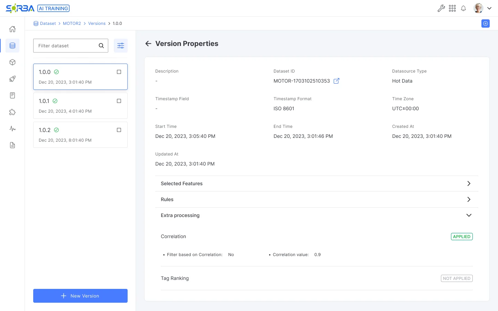
The need
One workspace to prepare data, train models and compare the results.
My design
A guided flow from dataset to analysis, for numerical and image data.
The outcome
Screens for the full flow, tested internally by developers and the e-commerce team. No usage data to share.
Context
A workspace for the whole ML loop.
AI Trainer is the part of Sorba’s platform where people prepare and version their data, create projects to analyse it and build models. Its overview states the order itself: work with data, analyse, then start predicting.
The work moved fast. I researched, designed and iterated on variants to solve each problem as it came up, often alongside the developers building it.
My contribution
- Redesigned the overview and the dataset module: creation, versions, status and warnings.
- Designed the dataset explorer, the analysis wizard, model templates and model comparison.
- Extended the flow to image datasets: labeling, insights, preprocessing and augmentation.
- Built the reusable pieces the screens share: cards, status chips, tables and dialogs.
I had no direct access to customers. Feedback came from the developers who tested the builds and from the e-commerce team who tested them too. I did not document each iteration while it happened, so this case is rebuilt from my Figma files.
Overview
From a sparse dashboard to one you can read.
The first overview mixed duplicated navigation with a few cards. I rebuilt it as a set of summary and status cards, so a person can see the state of their data, models and predictions at a glance.

Before
A quick-navigation list that repeated the side rail, two cards both titled “Datasets”, a Predictions card with a “New Dataset” button, and a feed of identical rows.

After
Summary cards with icon tiles and solid primary buttons, correct labels, four status and type charts with counts, latest templates, favorites and an activity table.
The product flow
Data, then analysis, then models.
The screens follow that order. The map shows what I designed along the way. Predictions are referenced in the overview but are not part of this case.
AI Trainer, end to end
- Overview
- Dataset: CSV, hot data or images
- Versions and explorer
- New analysis
- Models
- Templates and comparison
Image datasets add labeling and preprocessing before the analysis.
Each step shows its status, so problems surface early.
Datasets
More control, still one form.
The first dataset form accepted a single .zip and little else. Real files needed more: formats, time fields, gaps in the data and rules about what to keep. I grew the form in groups, so the extra controls appear where they are needed.

Before
A .zip-only file field, a date column and an empty rules area.

After
Drag and drop for CSV or XLSX, then format, date field, date format, time zone and aggregation by time interval.
Decide what happens to every field.
Each field gets an operation for missing values (replace with the previous value, the mean or a value, or discard) and optional low and high limits. Synthetic tags and advanced rules sit in their own tables, with import and export so a setup can be reused.
The three extra analyses, such as correlation or data drift, are cards that stay inactive until you choose them.

Decision 02 — Show the health of a dataset
Status you can read before you open it.
A dataset holds versions, and a version can fail on its own. The card shows a count of versions, and its colour and tooltip say what the count means: all good, one invalid version but still usable, or every version with issues.
Each version also lists which extra processing was applied and which was not, so people do not have to guess what went into a model.

Three health states
The dataset card carries its state in an icon, the count colour and a tooltip.
Version properties
Source, time range and the processing applied, with APPLIED and NOT APPLIED chips.
Image datasets
Labeling images, three ways.
Choosing “Image” as the application type opens a different dataset flow: upload a ZIP of pictures, define the classes you want to find and label the images.
Labeling is the slow part, so the flow offers three routes: let the system label from the class names and prompts, draw boxes by hand, or let a model propose labels that a person accepts.
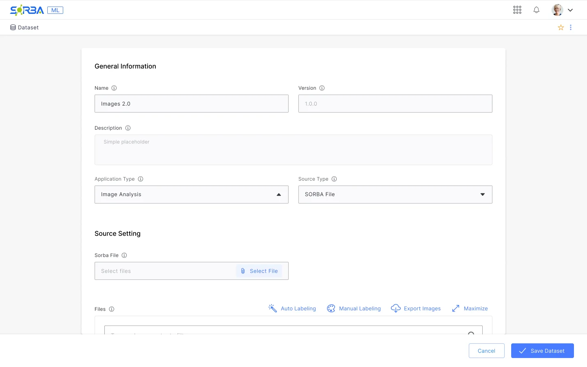
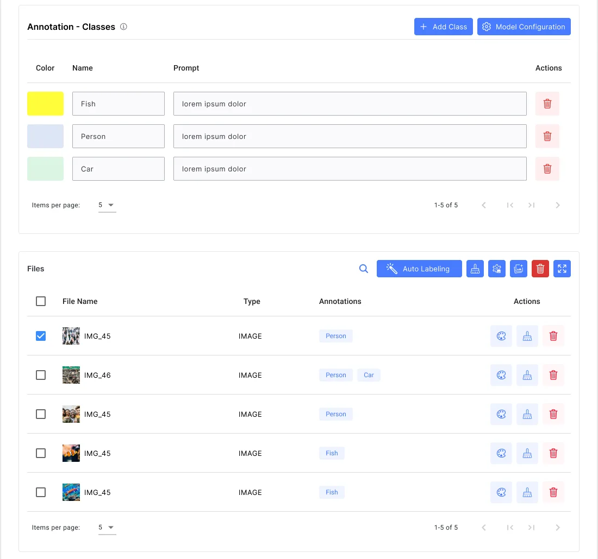
Classes, then auto-labeling
Each class has a colour, a name and a prompt. After auto-labeling, the tags appear in the file table.
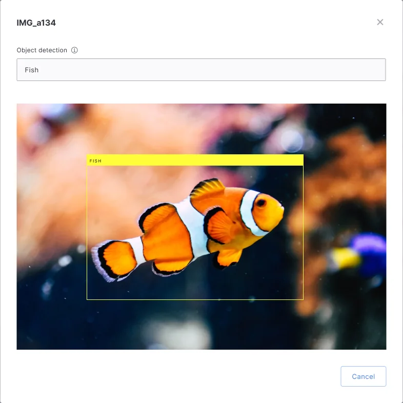
Check a label
The preview draws the box in the colour of its class, so a wrong tag is easy to spot.
What the flow does to keep people oriented
Rationale read from the screens; I do not have notes of the sessions where these were decided.
Decision 03 — See the data before training
A dataset explorer, in four views.
Before anyone trains a model, they can look at what they have: the image list, how large and how wide the images are, where the labeled objects fall, and how many objects each image holds.
The charts in my file use placeholder data and no axes or legends yet. Adding scales and legends is the next step for this screen.
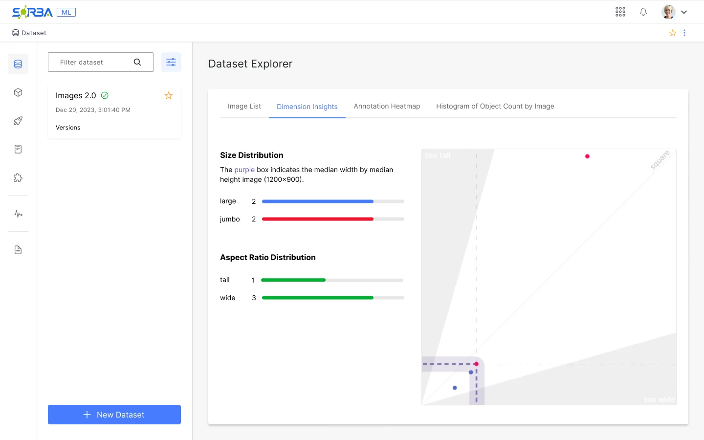
New analysis
Preparing data for a model, step by step.
A three-step wizard takes the dataset to a model: features, algorithm settings, then which dataset versions to use. For images, the first step maps dataset classes to model classes and lists the preprocessing and augmentation to apply, in order.
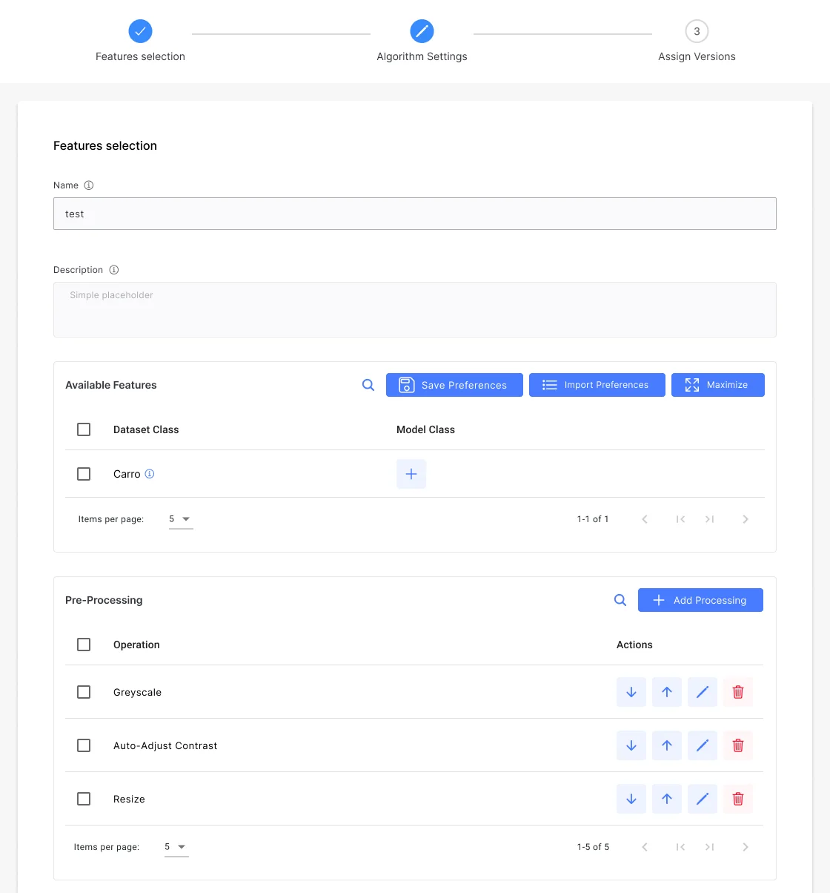
Order matters
Preprocessing and augmentation are ordered lists, with arrows to move a step up or down.
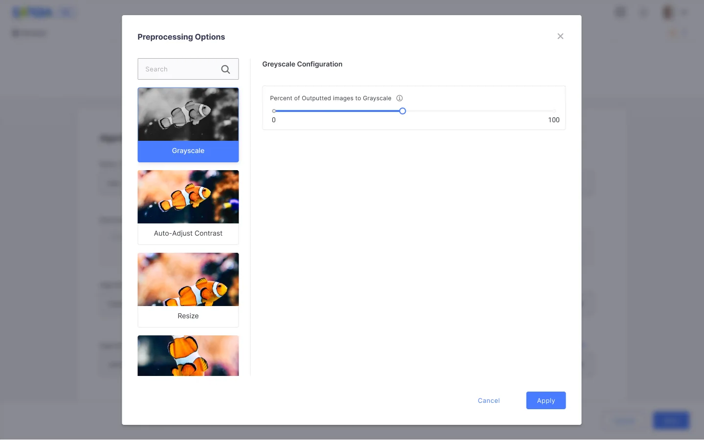
Preview each operation
Every option shows the same photo after the change, so people choose by looking, not by name.
Analyses and models
Managing and comparing what you built.
Once models exist, people need to find them, act on several at once and compare them. Three screens changed the most.
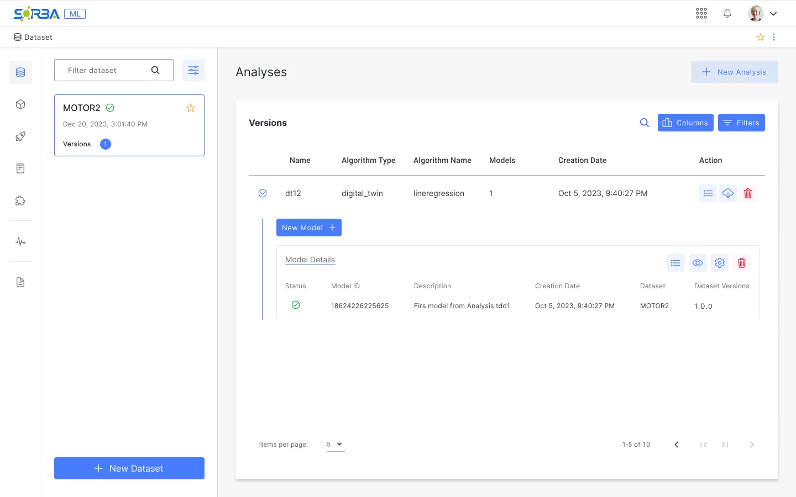
Analyses · before
One row at a time, with actions per row only.
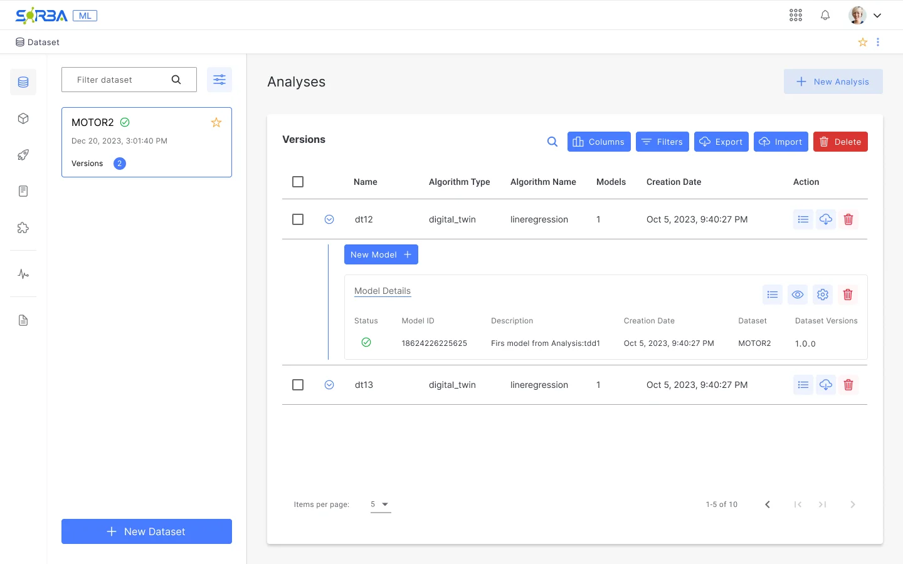
Analyses · after
A checkbox per row and bulk Export, Import and Delete beside Columns and Filters.
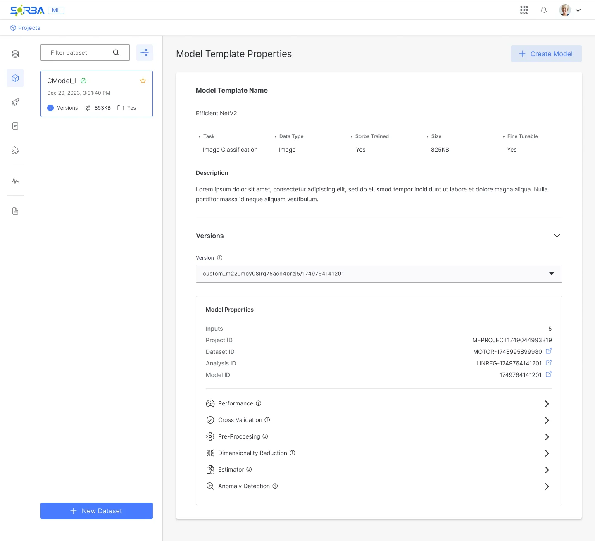
Model template · v1
Attributes in one flat strip: task, data type, Sorba trained, size, fine tunable.
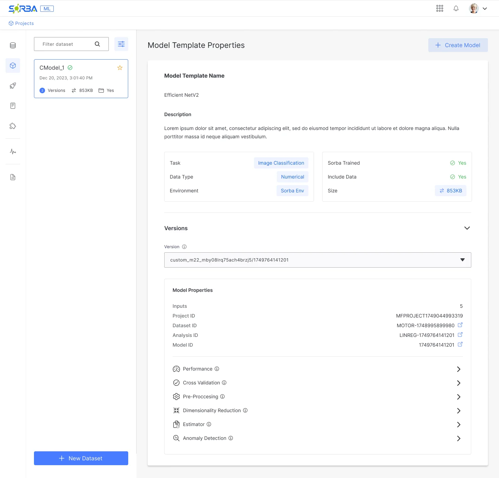
Model template · v7
Attributes grouped into two cards, with chips for values and a new Environment field.
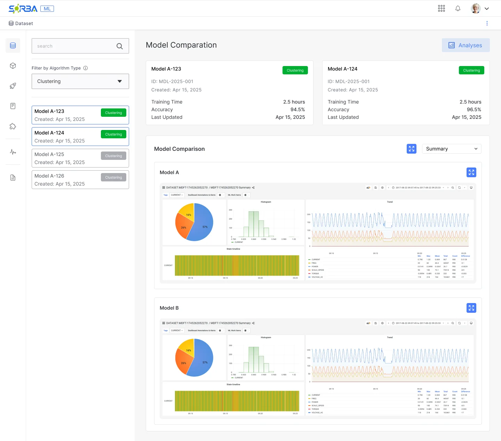
Comparison · v1
Two full dashboards stacked, with small charts to compare by scrolling.
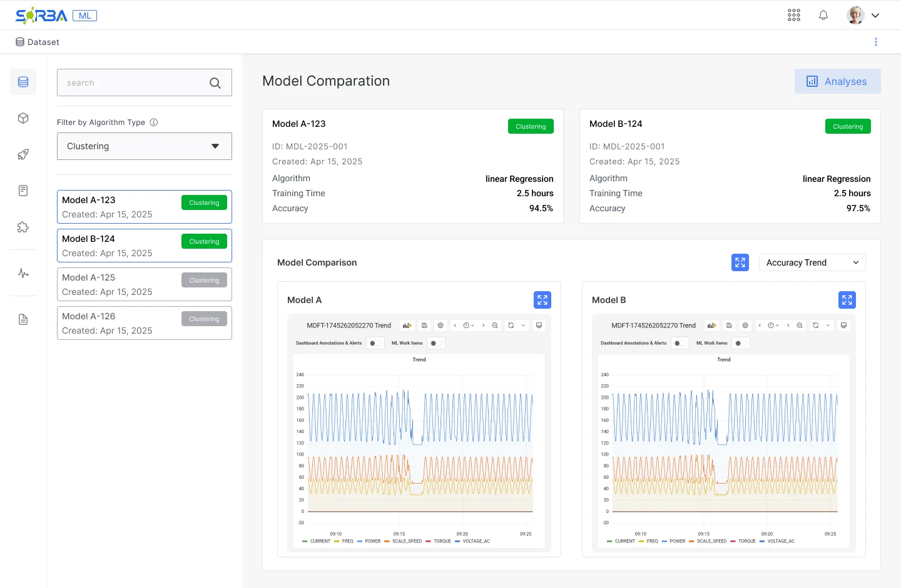
Comparison · v2
Models side by side, one metric at a time, with algorithm and accuracy in each card.
Reusable pieces
One small kit carried the product.
Dataset and version cards with their states, a card menu, status chips, summary and chart cards, tables with pagination, form and confirmation dialogs and a sticky footer for actions. Reusing them kept new screens consistent while the pace stayed high.
The component sheet from my Dataset file.
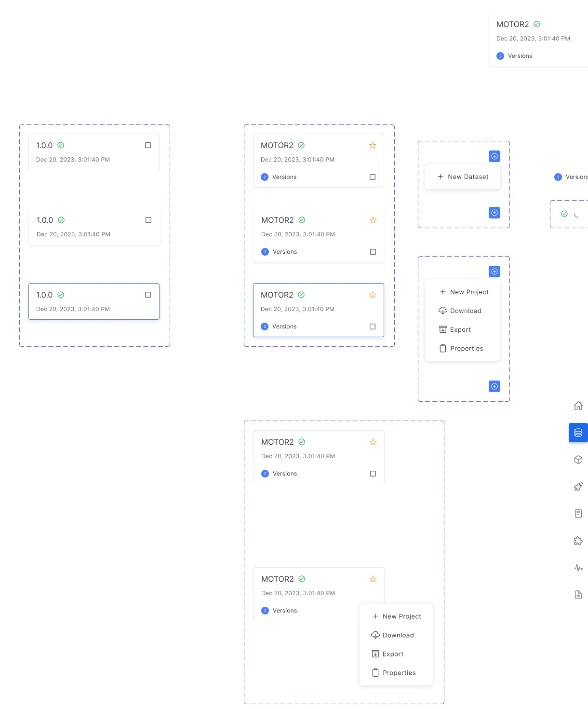
Cards, menu and navigation states from the component sheet.
How I worked
Fast, with developers close.
I researched, designed the variants and refined them while the product was being built. The developers tested the work as they implemented it, and the e-commerce team tested it too. Their feedback shaped later versions, which is why several screens in this case exist as v1, v2 and v7.
Some things I cannot show: I did not keep notes of each round, and I never had end users to test with. Everything above is read from the files, and I say so where it is an inference.
Design outcome & reflection
A full flow, designed. Next: test with users.
The result is a connected set of screens: overview, datasets with versions and an explorer, image labeling, an analysis wizard, model templates and comparison.
I do not have usage data for it. The outcomes I would measure next are time to a first trained model, errors while importing data and how often people use bulk actions.
What I would do differently
Write it down as I go
Keep a short decision log per screen: the problem, the variants, what changed after testing. That is the part this case has to infer.
Test with the people who train models
Watch a data scientist go from a raw file to a first model, and note where they stop or guess.
One vocabulary
The flow calls the same thing a tag, an annotation and a class. I would pick one word and use it everywhere.